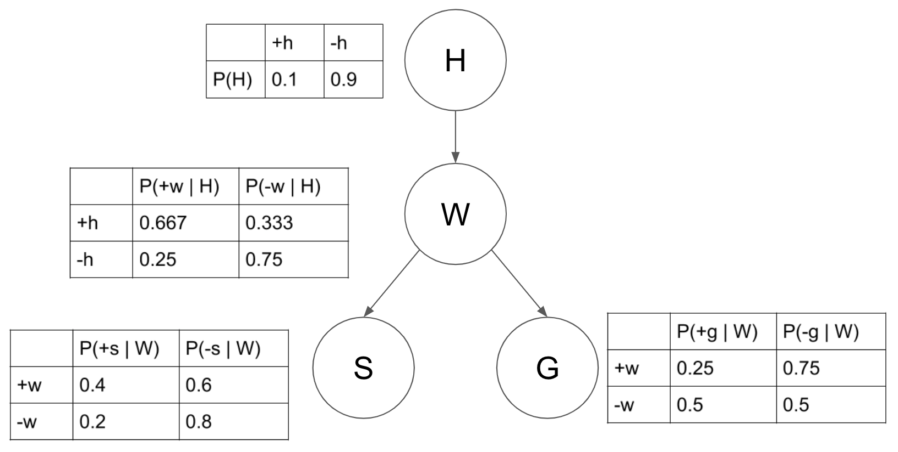

A Oshawott called Brandon is getting spammed by his friend, Turtwig Austin. Austin keeps harassing Brandon on whether he has a job yet. Brandon, being the great oshawott engineer he is, decides to build a spam filter. How? We'll use Bayes (more specifically, naive bayes)!
At a high level, Bayes Thereom uses prior probability to calculate new probability.